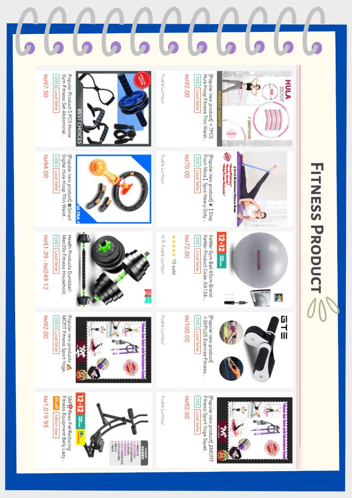
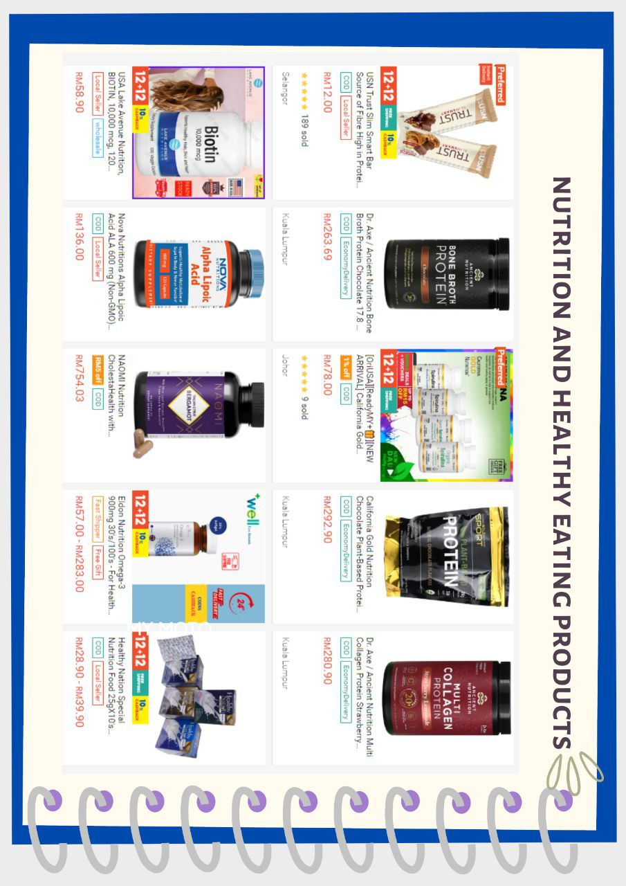
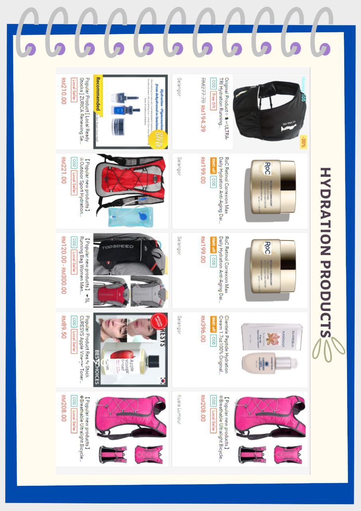

Wellness products
Wellness products are things that help people stay healthy and feel good
in different aspects of their lives.
These products can include fitness tools like activity trackers,
vitamins and supplements for nutrition,
apps for meditation and relaxation, and items like aromatherapy
diffusers.
The idea is to support a well-rounded and healthy lifestyle.

Fitness Products:
Fitness products are items designed to support physical activity and
exercise.
This category includes tools and equipment that aid in workouts and
overall fitness. Examples include:
Fitness Trackers: Devices that monitor physical activity,
heart rate, and sleep patterns.
Home Workout Equipment: Such as resistance bands, dumbbells,
yoga mats, and exercise balls.
Wearable Technology: Smartwatches and devices that provide data
on various fitness metrics.

Nutrition and Healthy Eating Products:
Products in this category focus on promoting healthy eating habits and
providing nutritional support. Some examples include:
Blenders and Juicers: For making nutritious smoothies and
fresh juices.
Meal Prep Containers: Supporting portion control and easy,
healthy meal planning.
Nutritional Supplements: Including vitamins, minerals, and
other dietary supplements.

Hydration Products:
Hydration products are designed to encourage and facilitate proper
water intake for overall health. Key examples are:
Reusable Water Bottles: To carry water conveniently and
promote regular hydration.
Infuser Bottles: Allowing users to add natural flavors to water
with fruits or herbs.